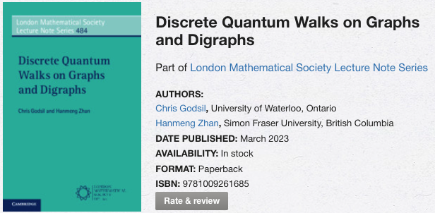

I am currently a postdoc fellow in the Department of Mathematics at Simon Fraser University, under the supervision of Bojan Mohar.
I obtained my Ph.D. in the Department of Combinatorics and Optimization at the University of Waterloo, supervised by Chris Godsil. We wrote a book on Discret Quantum Walks on Graphs and Digraphs:
I was a York Science Fellow in the Department of Mathematics and Statistics at York University, under the supervision of Ada Chan; and a postdoctoral fellow in the Centre de Recherches Mathématiques at the Université de Montréal, under the supervision of Luc Vinet.
I am interested in algebraic graph theory, with applications to quantum information and quantum computation. More specific areas include graph spectra, continuous-time and discrete-time quantum walks, equiangular lines, association schemes, covering graphs, and graph embeddings.
Here is my CV.
I gave an online course with Chris Godsil and Gabriel Coutinho on Combinatorics and Quantum Walks, in Winter 2021.
I recently co-supervised a project in the 2020 Fields Undergraduate Summer Research Program with Ada Chan.
I co-organized the Discrete Mathematics Seminar with Justin Troyka.